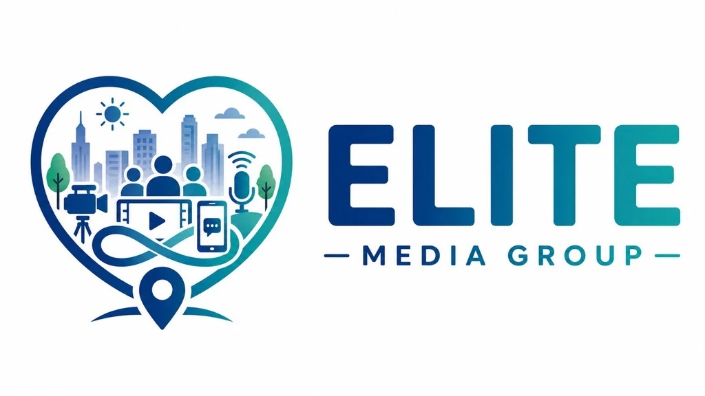

One ecosystem. Many ways to create value.
Representation, technology, owned media, AI experiences, creators, brands, and consumers are connected through a model designed to improve over time.
How the pieces connect
Builds and operates the broader ecosystem
Represents creators and builds brand partnerships
Connects operations, relationships, automation, AI, and insight
Hosts local-first media experiences and Creator Hubs
Built for the moments that matter.
The In My City ecosystem is designed to be present through life's toughest moments, largest decisions, everyday needs, and most meaningful milestones.
That purpose connects care, homes, families, food, pets, education, travel, local services, and more. Creator Hubs bring real voices and lived expertise into those environments.
Growing responsibly
The ecosystem is still expanding. We do not claim traffic, reach, or scale that has not yet been achieved. The advantage today is the connected foundation: owned platforms, AI-backed consumer experiences, EMG Loop intelligence, and a clear model for creator participation.
Fourteen vertical destinations.
Each property serves a distinct consumer need and creates a natural home for creators, experts, brands, and local businesses within that category.
AI-backed experiences. Human-centered purpose.
Each In My City property is being developed with AI experiences and data connections that help visitors navigate information and help EMG understand aggregate interests and engagement.
EMG Loop brings those signals together to support smarter content decisions, more relevant experiences, and better creator-brand alignment.
